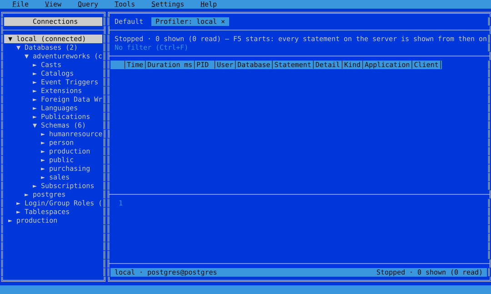
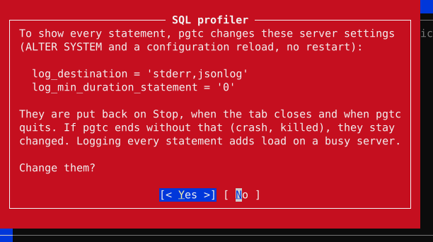
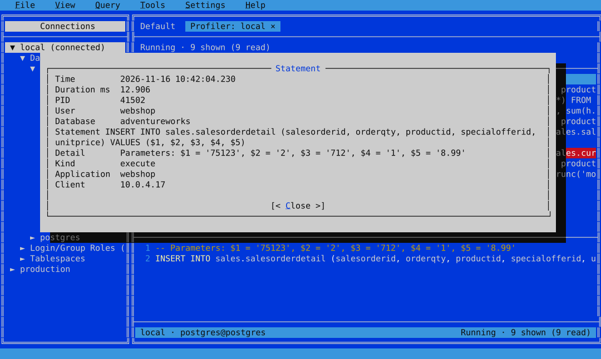
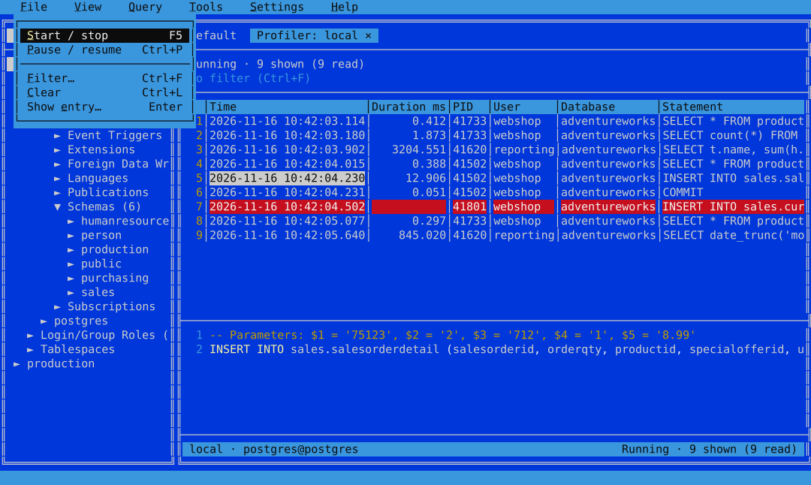

SQL profiler
A live statement trace of the whole cluster, read from the server log: every completed statement with
its duration, backend PID, role, database, bind parameters and errors. It sets
log_min_duration_statement = 0 while it runs and tails the jsonlog / csvlog
file through SQL functions.

What it is for
- What does this application really send? The SQL as the server received it — including what an ORM or a framework generates.
- Which statement is slow? Every entry has its duration.
- Why does it fail?
ERROR/FATAL/PANICrecords appear with the statement that caused them. - With which values? Statements run through the extended query protocol are shown with their bind parameters.
The dashboard samples pg_stat_activity; a statement that takes two
milliseconds is never seen there. The profiler shows every statement, one entry each.
How it works — and what that means for you
PostgreSQL has no trace protocol. The only complete record of executed statements is the server log. The profiler therefore:
- sets
log_min_duration_statement = 0and makes surelog_destinationincludes a machine-readable format (ALTER SYSTEM, thenpg_reload_conf()); - once a second finds the current log file with
pg_current_logfile()and reads its new bytes withpg_read_binary_file()— over its own session. It needs no file-system access to the server host, so it works over any connection; - restores the settings when you stop.
| Requirement | Details |
|---|---|
logging_collector = on | The log files are written by the logging collector. If it is off, Start only reports it: changing it needs a server restart, which pgtc never does. |
| Privileges | A superuser, or a role with pg_read_server_files (for pg_read_binary_file() and pg_stat_file()) that may also run ALTER SYSTEM for the two settings and pg_reload_conf(). Without them, Start or the first read shows the server's error. |
| Managed services | Cloud database services usually grant neither; the profiler cannot be used there. |
| Cluster-wide | Both settings are changed for the whole cluster: while the profiler runs, the statements of all databases and roles are logged. Use the filter to see only yours. |
On a busy production server, think first. log_min_duration_statement = 0 makes the log grow
fast and adds a log write to every statement. For a few minutes of tracing this is fine; do not leave the profiler
running over the weekend.
Opening the profiler
Put the tree cursor on a connected server or on one of its databases and press Alt+P (also Ctrl+P) — or choose , or in the context menu.

- There is one profiler tab per server, named Profiler: local. Opening it again switches to it.
- Opened from a database row, the filter is already set to that database.
- The tab holds its own session on the server's maintenance database. Entries with that session's PID are dropped, so the profiler never lists its own statements.
- Opening the tab changes nothing on the server. Everything starts with F5.
Start
- Press F5. pgtc reads
logging_collector,log_destinationandlog_min_duration_statementwith their source file frompg_settings. - If settings have to change, pgtc asks first and lists exactly what it will set:

Setting Set to Why log_min_duration_statement0Log every completed statement, with its duration. log_destinationthe current value plus jsonlog(PostgreSQL 15 and newer) orcsvlog(older)A structured format with one field per attribute. The existing destinations ( stderr, …) are kept. If the server already writesjsonlog(15+) orcsvlog, nothing is added and that format is read. - Answer Yes. pgtc runs one
ALTER SYSTEM SETper setting, thenSELECT pg_reload_conf()— no restart, no interruption for other sessions.
The header changes to Running and entries start to appear. Reading starts at the end of the current log file: only statements logged after Start are shown.
If nothing needs to change — log_min_duration_statement is already 0 and a structured
format is being written — there is no question and the profiler simply starts.
Reading the list
| Column | Meaning |
|---|---|
| Time | Log timestamp of the record — written when the statement completed; server clock. |
| Duration ms | The duration: value of the log line, in milliseconds. Empty for an error. |
| PID | Backend process ID. One PID = one session, so you can follow one client through its statements. |
| User, Database | Role and database of the session. |
| Statement | The SQL text. |
| Detail | For an execute: the bind parameters from the record's DETAIL ($1 = '771'). For an error: the error message. |
| Kind | statement — simple query protocol; execute — the Execute step of the extended query protocol (prepared statements, portals); error. The Parse and Bind steps are not listed. |
| Application, Client | application_name and the client's address. |
- New entries are added at the bottom. While the cursor is on the last row it follows them; move up and the list stays where you are, while new entries keep arriving below.
- Errors — records of severity
ERROR,FATALorPANIC, or with a SQLSTATE outside classes 00, 01 and 02 — are drawn in the error colour. Their Statement is the SQL that failed. - The header line counts: Running · 9 shown (9 read) — read is every entry parsed from the log, shown is what passes the filter.
- The list keeps the newest 100,000 entries; older ones are dropped.
The list is the usual grid: arrows, PgUp / PgDn, Home / End, sideways scrolling for the columns at the right; Ctrl+C copies the cell, Ctrl+A then Ctrl+C the whole list.
The statement pane
Under the list, the selected entry's statement is shown in full, formatted as it was sent, with SQL highlighting. Above the statement, as SQL comments, are
- its bind parameters —
-- Parameters: $1 = '75123', $2 = '2', …— for an execute; - the error message —
-- ERROR: …— for a failed one.
Because they are comments, a copy of the pane's text is still a valid SQL script that carries its own explanation.
| Key | What it does |
|---|---|
| Alt+Down / Alt+Up | Into the pane (to scroll, select, copy, search with Ctrl+F) / back to the list. |
| Ctrl+R | Hide / show the pane. |
| Alt+Shift+Up / Alt+Shift+Down | Pane smaller / larger; or drag its upper line. |
| Ctrl+E | Open the statement in a new query tab, connected to the database it ran in. There you can run it again, change it, or prefix it with EXPLAIN (ANALYZE, BUFFERS). |
The whole entry

Filtering
The log is cluster-wide, so on a shared server the list fills with other sessions' statements. Press Ctrl+F:

| Field | Shows only entries… |
|---|---|
| User | of this role. |
| Database | in this database. |
| PID | of this one backend. |
| Application | with this application_name. |
| Text contains | whose statement contains this text (case-insensitive) — for example a table name. |
- An empty field matches everything. Several fields must all match.
- The line under the header shows the active filter (or No filter (Ctrl+F)).
- The filter is applied client-side, to the entries already read; the server logs everything regardless. So changing the filter also changes what is already in the list — nothing is lost: clear the filter and everything read is shown again.
To follow one application session: find one of its statements, note its PID, and filter by that PID. You then see exactly the statements of that one backend.
Pause and clear
| Key | What it does |
|---|---|
| Ctrl+P | Pause: pgtc stops reading the log; the server keeps logging. Ctrl+P again resumes at the file offset where it stopped — nothing is skipped. |
| Ctrl+L | Clear: empties the list. Useful right before the action you want to observe. |
A typical session: start the profiler, set the filter to your application, Ctrl+L, do one thing in the application, press Ctrl+P, and read what that one thing sent.
Stop
F5 again stops the profiler. pgtc restores the two settings: a value that came from
postgresql.auto.conf before Start is set again with ALTER SYSTEM SET, any other is removed
with ALTER SYSTEM RESET — so the value from postgresql.conf or the built-in default applies
again — followed by pg_reload_conf(). The entries stay in the list for reading.
The same happens by itself when you
- close the profiler tab,
- disconnect the server,
- quit pgtc — quitting waits for it; the status line shows Restoring logging settings…
If pgtc could not put the settings back
If pgtc is killed, the machine crashes, or the session is lost while the profiler runs, the changed values stay
in postgresql.auto.conf and the server keeps logging every statement. pgtc keeps track of this:
- When it changes the settings, it records — in its own file
profiler_restore.toml— for which server, when, and how to undo each change. No password is stored. - The next time you connect that server in pgtc, it reads the two settings. If they still have the values
the profiler set, it asks:
pgtc ended without putting back these logging settings on … (changed …): … Put them back now?
| Answer | What happens |
|---|---|
| Yes | The ALTER SYSTEM statements and pg_reload_conf() run now. |
| Not now | Nothing; pgtc asks again at the next connect. |
| Forget | pgtc drops its record and will not ask again — choose this if you want to keep the settings. |
If the settings have been changed by somebody else in the meantime, pgtc drops its record silently. If restoring fails — the role you connected as lacks the privileges — the record stays and the question comes again.
To undo the change by hand, as a superuser (if these two settings were not set with ALTER SYSTEM before
the profiler ran):
ALTER SYSTEM RESET log_min_duration_statement;
ALTER SYSTEM RESET log_destination;
SELECT pg_reload_conf();The tab status row
local · postgres@postgres — the profiler's own session — and at the right the state:
Stopped, Running or Paused, with the number of entries shown and read.
Limits
- Statements inside functions are not listed one by one: the log has one record for the top-level
SELECT my_function()that the client sent, with the total duration. lc_messages. Errors are recognised by SQLSTATE and work in any language. The statement / execute kinds are recognised by the English words of the log message; withlc_messagesin another language, every line with a duration is still shown, with the kind as the server wrote it.- The profiler reads at most 1 MB of log per second. On a server that logs more than that, the list falls behind; it catches up when the load drops, or when you stop.
- The entries cannot be exported to a file yet; copy them (Ctrl+A, Ctrl+C).
All profiler keys

| Key | What it does |
|---|---|
| F5 | Start / stop. |
| Ctrl+P | Pause / resume. |
| Ctrl+F | Filter. |
| Ctrl+L | Clear the list. |
| Enter | Show the whole entry. |
| Ctrl+E | The statement in a new query tab. |
| Ctrl+R | Show / hide the statement pane. |
| Alt+Down / Alt+Up | Statement pane / list. |
| Ctrl+C, Ctrl+A | Copy; select all. |
| F2 | Context menu. |